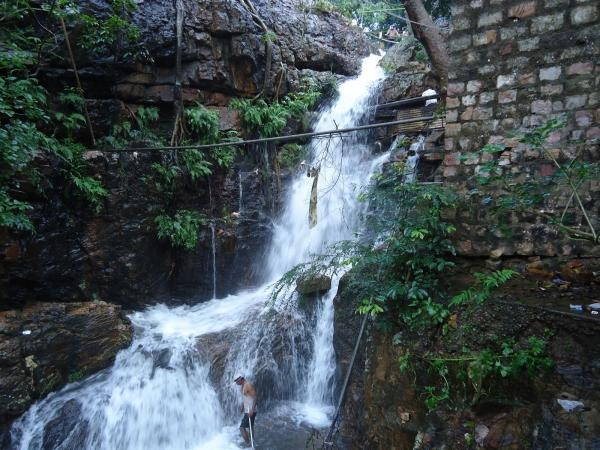

Akasa Ganga
Akasa Ganga is a natural waterfall located near Tirupati in the Chittoor district of Andhra Pradesh, India. It is known for its scenic beauty and spiritual significance, attracting visitors seeking tranquility and natural beauty.
Location: Chittoor District, Andhra Pradesh, India
Activities: Nature walks, photography, and enjoying the scenic beauty.
Transportation: Accessible by road from Tirupati. Regular buses and private taxis are available.